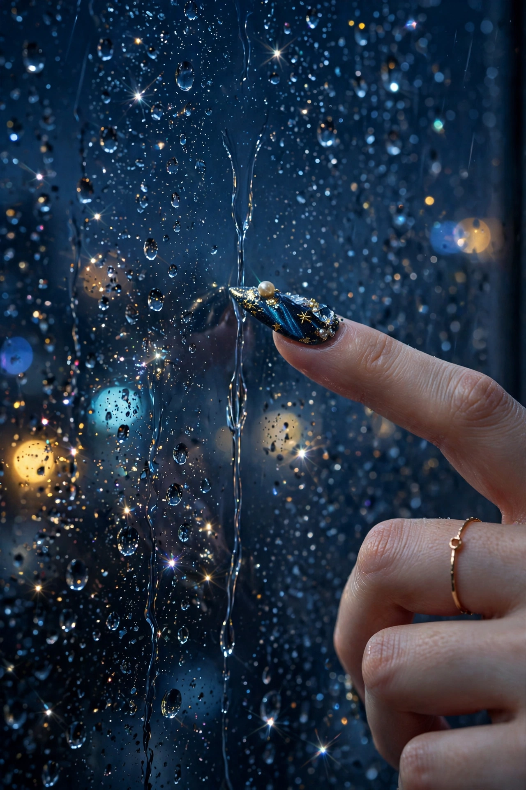
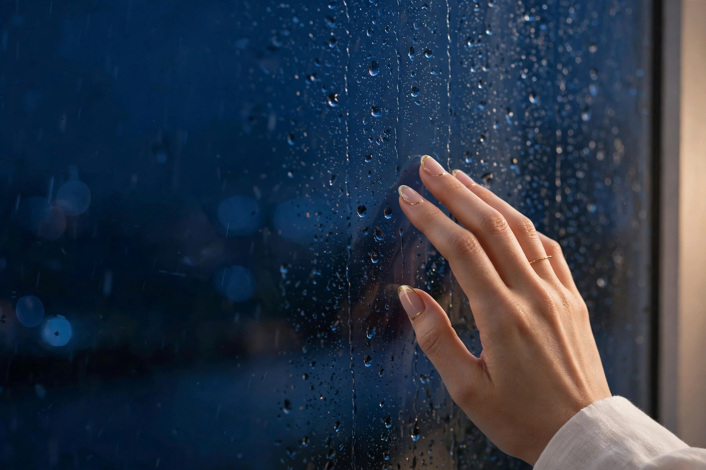
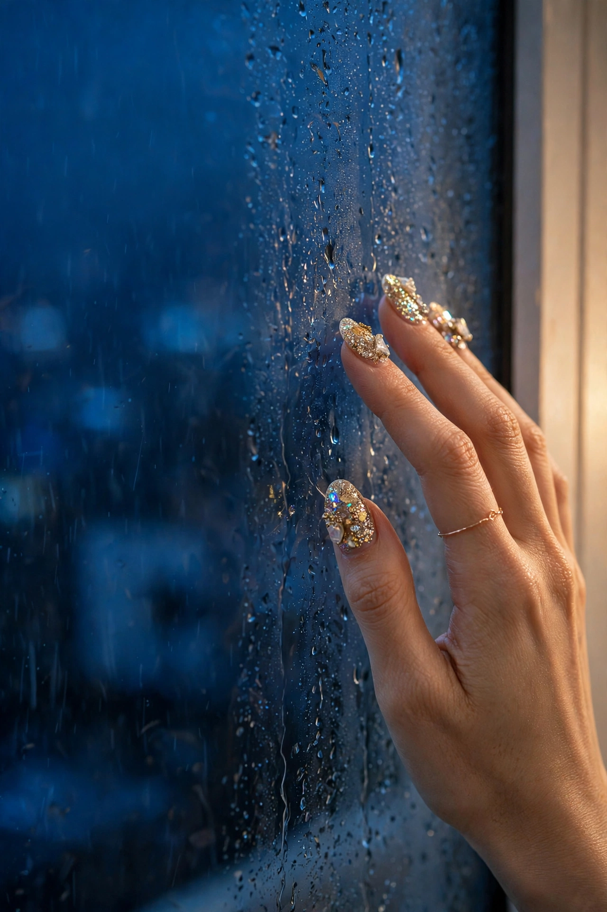
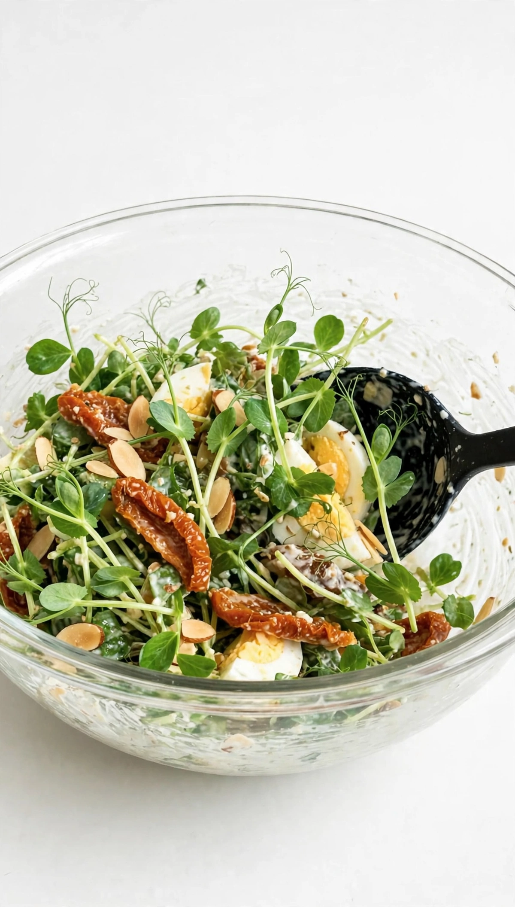
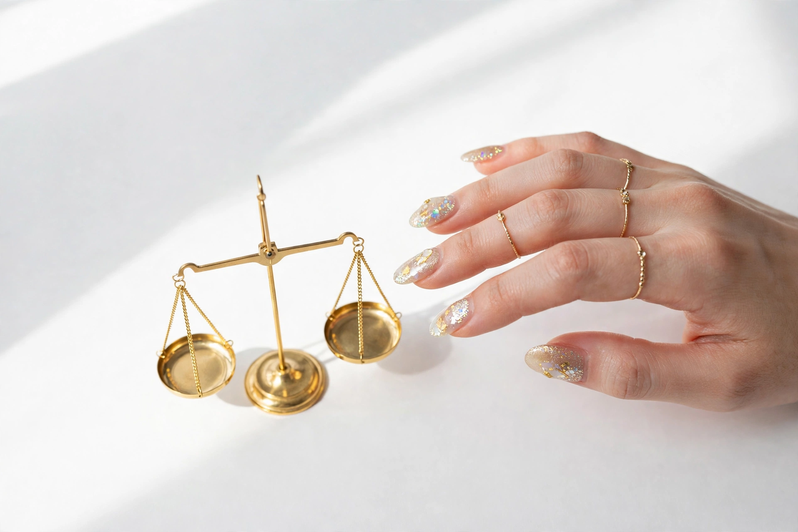
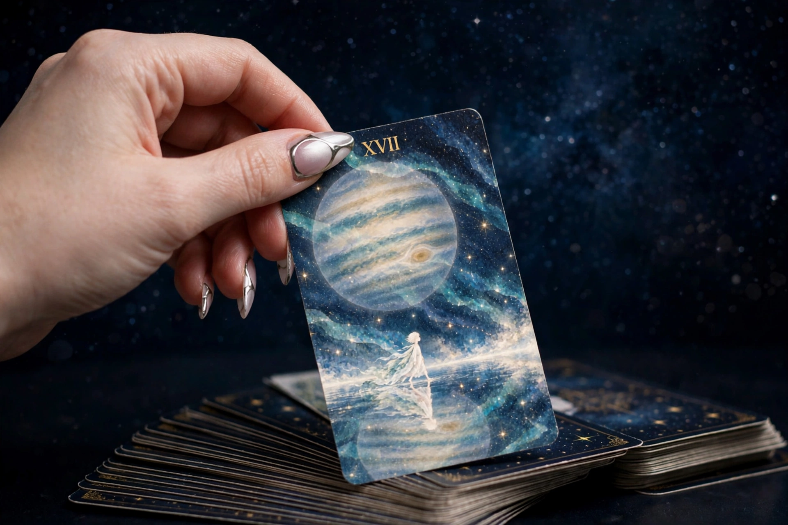
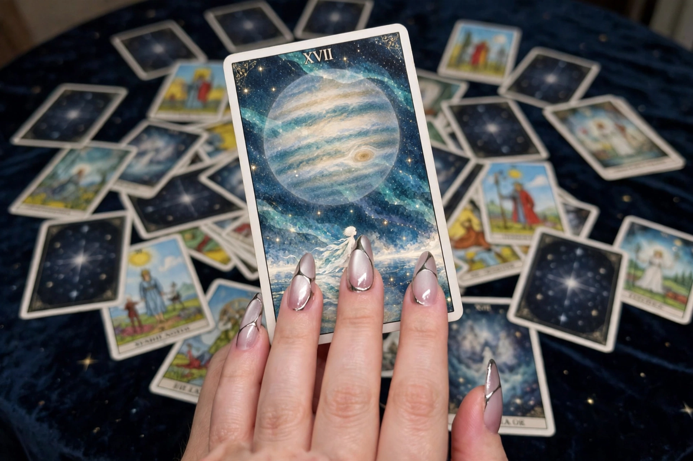
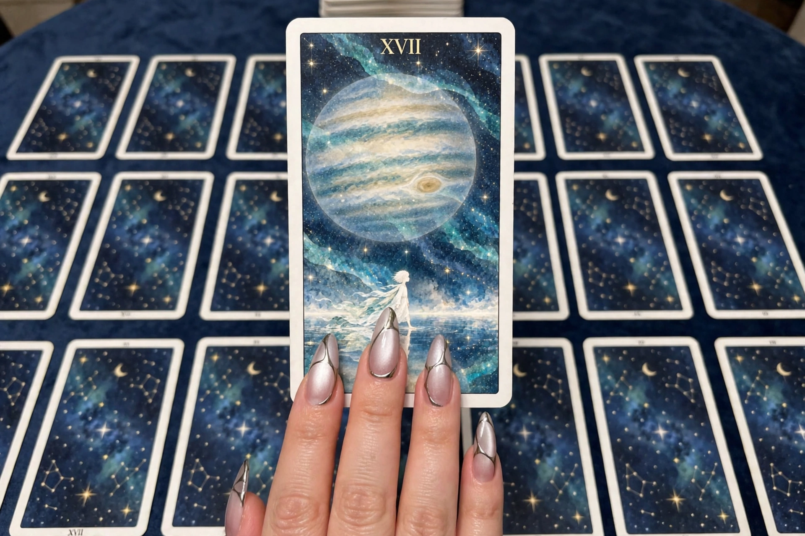
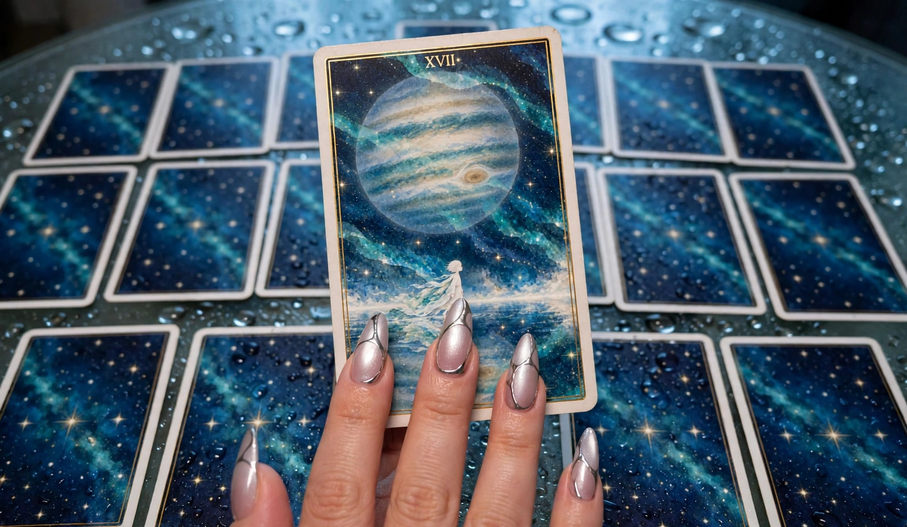
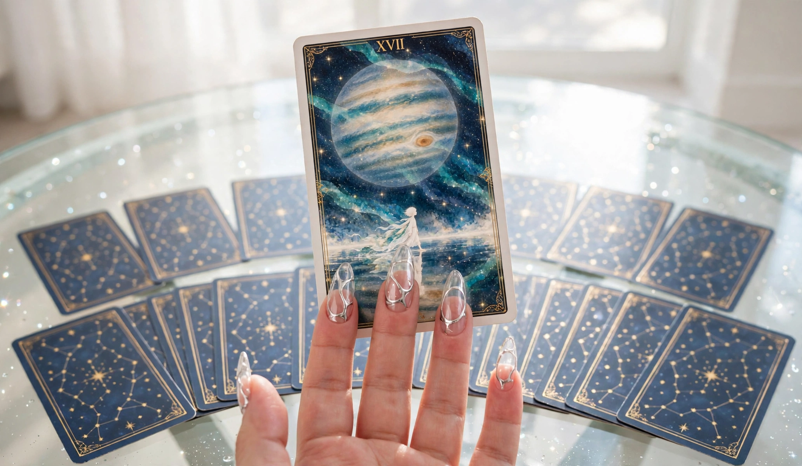

【MUSE の実績と手持ちの条件（2026-11-02 現在）】 ■ 1. IP を作った経験 - フラ @fura_world：コンセプト設計（芯＝言葉と気持ちの「あいだ」／詰まり／循環、9歳の視点、商品＝6レンズ）。シート類は机 specs/fura_world/ と手元に配置済み（窓の資料ページにも写しあり） - アイダ @22aida_growth：コンセプト確定。CONCEPT／OPERATION／PROFILE／CLONE_PACK を作成済み（机 specs/aida/ と手元、窓にも写しあり） - ひいろ：AIコーチのクローニングプロファイル v0.1、挙動仕様、辞書を作成済み ■ 2. アイダの投稿生成の実績（工程は実際に回っている） - 雨の投稿：テキスト生成→画像生成→ルール反映の再テスト→締めの形で NO3 合格→公開済み - お金の投稿：2026-10-27 に Threads 公開済み - はかり（距離）の投稿：テキスト＋画像まで生成完了 - 視座の投稿：テキストあり（画像は未確定） - 投稿の実物はこのページの下に全文を掲載 ■ 3. 画像生成の実績 - 生成済み画像の実物はこのページの下に掲載（雨／サラダボウル／はかり／スパークリング／タロット） - 条件は IMAGE_RULES（このページに全文掲載）と、机 specs/ai_coach/画像生成条件_GPT.md（窓 docs/gpt-image.html） ■ 4. ライティングの実績と条件 - センチメントライティング プロンプト Meta 運用版 v0.1（窓 docs/sentiment-writing.html） - 感情翻訳の変換表と方針（窓 docs/emotion-translation.html） - フラ作り直し試作（フラ素材ページに全文掲載） - stage-clue（Dify）を構築・実行済み ■ 5. フラのペルソナ分析・プロファイルの実績 - PERSONA_LEARNING、MAMA_TONE_MAP、PROFILE_AND_POSTS（フラ素材ページに全文掲載） - 森部ゆりリサーチ、センチメント現場分析（リサーチ素材ページに全文掲載） - ペルソナ言葉バイナリ（Drive「マーケティング戦略」側） ■ 6. Claude へ渡した実績（過去分） - REQUEST ファイル群（loop1〜11）で材料固めや照合を渡し、成果物を受け取った実績あり（机 goals/meta-routing/） - eduGate 資料の読み込みテスト：認識レポートを受け取り照合まで完了 - PKG-001（フラ・リール脚本化）は Drive「受け渡しコンテナ」に配置 ■ 7. 現在の状態 - 上記の条件・シート・実績は、すべて MUSE の手元と机にある - にもかかわらず現在、アイダの投稿生成について、条件を翻訳して Claude へ渡した指示は1件もない（CALL.md は「状態：なし」） - つまり「渡せる条件を持っているのに、渡せていない」状態
# 素材001「雨」→ アイダ投稿案（2026-10-26投入） ## 原素材：フラの原稿 きょうは 雨 外に行けなくて こまったな 窓に おでこをくっつけて ずっと見てた 雨が 葉っぱにたまって ぽとん 地面の水たまりが ひとつ ふたつ ふえていく やんだら なにしようかな 水たまりで ぴょん 葉っぱのしずくも さわりたい 気がついたら 足が ぱたぱたしてた ## 切り口の違い（ユーザー指定） - フラ: 雨が止んだら何をしよう、と考える（外・未来・子どもの視点） - アイダ: 始まりは「雨の日は世界がしずかだ」。日常の煩雑さから切り離される情景描写 - アイダは雨の「あいだ」を、ふだん自分が埋められなかった「間」を埋めるのに使う - 室内で洗濯機を廻す／いつもより湯舟にゆっくりつかる／ゆっくり味わいたいワインを冷やす／ワインに合う「最高のおつまみ」を検索する ## 投稿案（Threads本命・22時） 雨の日は、世界がしずかだ。 外に出られないかわりに、 ふだん埋められなかった「間」が、ぽっかり空いた。 洗濯機をまわして、 いつもより長く、湯舟につかって、 ゆっくり味わいたいワインを冷やして、 合うおつまみを、真剣に検索する。 急がなくていい時間って、 こんなにあったんだ。 —— 雨のあいだは、わたしのもの。 ## 投稿案（Instagram・同日夜、画像がある場合） Threads版と同文を基本に、1行空けと余白を強めた編集版。画像は日常側（白・手元・ワイン or 窓辺）か、非日常側（THE MOON等）どちらでも成立する。ハッシュタグは付けないか最小限（世界観優先）。 ## メモ - 「間」の二重の意味（雨のあいだ／埋められなかった間）は説明しない。本文の並びで感じさせる - 煩雑さから切り離される静けさ＝自分ごと化の入り口（アラフォー女性の雨の日・在宅の夜） - 締めの一行がパラレル・ダイアリーの蓄積になる ## v2（2026-10-26 ユーザー指摘「説明臭いのが一番厄介」を受けて改稿） 初稿の説明臭さの発生源: 「ふだん埋められなかった『間』が、ぽっかり空いた」（概念の説明）、「急がなくていい時間って、こんなにあったんだ」（気づきの総括）。両方を削除し、場面・音・温度だけに差し替え。 雨の日は、世界がしずかだ。 洗濯機のまわる音。 湯舟のお湯が、いつもより少し熱い。 ワインを冷蔵庫に入れて、 合うおつまみを、真剣に検索する。 決まらないまま、雨の音を聞いている。 —— 今夜は、急がない。 ルール化: アイダの文章で一番の敵は「説明臭さ」。概念語（間・循環など）と、気づきの総括文（〜って、こんなに〜んだ）を本文に入れない。「決まらないまま」を残すのは、決めなくていいことを情景で置くため ## v3 完成版（2026-10-26、フラ原文からアイダ風に仕上げ） 追加した要素: 参照元（Vanki Nails／Cook Vibe）に基づくASMR的な感覚の豊かさ（音の重なり、水滴、きらきら）。フラの「おでこを窓に」は、アイダでは「指先で雨粒をたどる」に置換（同じ窓、大人の身体）。寂しさではなく感覚が満ちている静けさ。逆算で生きた一日の発表として、洗濯機→窓→湯舟→ワインの順で一日が流れる構成。 雨の日は、世界がしずかだ。 洗濯機のまわる音と、 雨の音が、重なっている。 窓の内側から、指先で雨粒をたどる。 ネイルのきらきらが、水滴に映る。 湯舟に、いつもより長くつかる。 お湯のなかで、指をひらいて、閉じる。 ワインは、冷蔵庫で冷えている。 合うおつまみは、まだ検索中。 決まらないまま、ページだけ増えていく。 —— 今夜は、急がない。 ペア画像: 当初は assets の雨窓v2（指先・派手ネイル・雨粒）を想定。その後、ユーザーの指定「外の世界は glass・ASMR／指先は Vanki Nails」で作った `aida_rain_glass_asmr` 画像が最終ペアになった。 ## 公開メモ - 2026-10-26 19:17、ユーザーが「今投稿しました」と報告。公開はユーザー側で実行。 - 使用セットは v3完成版テキスト＋glass・ASMR画像の想定。タグの最終形はこの会話では未確定（Muse案は提示済み）。 ## ユーザー確定版（投稿文として提示された最終形） 雨の日は、世界がしずかだ。 洗濯機のまわる音と 雨音が重なる。 窓から、指先で雨粒をたどる。 ネイルのきらきらが 水滴に映る。 こんな日は 湯舟に いつもより長くつかる。 お湯のなか 指をひらいて閉じて くりかえし。 ワインが 冷蔵庫で冷えている。 おつまみは、まだ検索中。 決まらないまま SNSを見る時間だけが 増えていく。 —— 今夜は、急がない。 ### v3からの差分で学ぶアイダの文体 - 行をもっと短く刻む。文ではなく、感覚の単位で改行する - 言葉を簡単にする（「重なっている」→「重なる」） - 動作をくりかえす（「指をひらいて閉じて／くりかえし」）。ASMR的なプロセス感 - 理想化しない。「ページだけ増えていく」ではなく「SNSを見る時間だけが増えていく」。検索のダラダラした現実が入ることで、作られた夜ではなく生きた一日になる
# 素材002「お金・循環」→ アイダ投稿案（2026-10-26投入） ## 原素材：フラの投稿セット（カルーセル＋締め画像＋本文） - お金を使うたびに、ちょっと罪悪感があるって話を聞いたよ - ムダづかいはしてないのに、使うと自分まで減った気がするんだって - 循環のレンズでのぞいたら、その人とお金のあいだに「守らなきゃ」の栓がしてあるのが見えたよ - でもね、お金って、減ったんじゃなくて、形を変えて、つ・な・げ・る・役になっただけなのかもね - 本文: お金を使うとちょっと胸がちくっとする人の話。循環のレンズでのぞいたら、減ってるんじゃなくて形を変えてたんだよ ## アイダへの組み替え - フラ: 他人の話を聞いて、レンズで「栓」を見る（観察・概念の絵） - アイダ: 自分のレジの場面から入る。「形を変えた先」を、22時の実物（冷えたワイン、光る爪、グラス）で見せる。レンズ名・栓の概念は本文に出さない - 情報レイヤー1点: 自分のお金は月のはじめに分けてある、という習慣を情景の1行で置く（家計の講義にしない） ## 投稿案（Threads・22時） ネイルの帰り道、 ワインを1本、買った。 レジで、胸がちくっとした。 ムダづかいじゃ、ないのにね。 22時。 冷蔵庫から出したワインと、 光る爪で、グラスを持つ。 あのちくっとは、 ここに、形を変えてた。 自分のお金は、 月のはじめに、分けてある。 —— だから、味がちゃんとする。 ## チェック - 情景のみ、概念語なし（循環・レンズ・栓は出していない） - 情報1点あり（月初に自分費を分ける） - 罪悪感を「直す」話にしていない。形を変えた先が夜に実物としてある、という発表 ## v2（2026-10-26 ユーザー指摘「ネイルとワインばかり出しすぎ」を受けて改稿） 初稿は1本の中にネイル＋ワインの両方を主役級で入れてしまった。署名アイテムの過剰使用。場面を「本屋で画集」に差し替え、指先はページをめくる所作だけに落とした。 仕事帰り、 本屋で画集を1冊。 レジで、胸がちくっとした。 ムダづかいじゃ、ないのにね。 22時。 ページをめくる音と、 さっきのちくっとが、 同じテーブルの上にある。 減ったんじゃなくて、 今夜の時間に、形を変えてた。 自分のお金は、 月のはじめに、分けてある。 —— だから、ゆっくり見られる。 ## v3（2026-10-26 ユーザー指摘を受けて全面改稿） 指摘の要点: - 「罪悪感が消えると味がちゃんとする」は、罪悪感の正体を言語化できていないまま感情だけ使った初稿の締め。成立しない - お金を使うと胸がチクっとする／罪悪感は「子供がいる人」の話。フラの親層の感情であって、アイダ（子供がいない）の感情ではない。他人の感情をペルソナに着せていた - アイダのワインは、仕事に疲れた日に買う「くたくたになった自分へのご褒美」 - アイダは疲れたままにしないし、「お金を使わないこと」を自分への言い訳にしない - **アイダは「繋がり」にお金を投資している**。お金の行き先は、減る／貯めるではなく、繋がり 仕事帰り、 くたくたで、ワインを1本。 自分への、ご褒美。 ラベルに、 作った人の名前がある。 顔は知らない。 でも今夜は、その人の畑の話を聞いてる。 減ったんじゃなくて、 繋がりに、形を変えてた。 —— お金は、繋がりのほうへ行った。 ~~情報レイヤー1点: ワインは作った人の名前で選ぶ~~ **撤回（2026-10-26 ユーザー指摘「勝手に補足しちゃダメ」）**: 「作った人の名前で選ぶ」「ラベルに名前」「畑の話」はいずれもユーザーが言っていない Muse の補足・創作。同じく v1 の「自分のお金は月のはじめに分けてある」もユーザーの素材にない創作だった。残るのはユーザーが言った要素だけ：疲れた日のワインは自分へのご褒美／お金を使わないことを言い訳にしない／お金は繋がりへの投資 ## ユーザー版（2026-10-26 トガワさん提示・正本） お金をもつことに罪悪感があって つい使ってしまうはなしをきいた お金が怖い感覚 なんとなくわかる 誰も教えてくれないけど お金って使う側が 試されるものだ 働かせ方がわからないと 持っているのが怖くなる お金は悪者じゃない 仕事でへとへとになった日 何もする気力がわかなくても 帰り道にワインと 栄養がとれるおつまみがあると 元気になれる 形をかえて巡ってる 使い方次第で繋がる そうおもって ありがとうって使うと 少し楽になるかもね ### Muse案との差分（学習） - 罪悪感の向きが逆だった: 使う罪悪感ではなく「持つことへの罪悪感」と「働かせ方がわからない怖さ」。だから、つい使ってしまう、までがワンセット - アイダは短い断定も使う（「お金は悪者じゃない」「使う側が試されるものだ」）。情景だけが正解ではなかった。ただし断定は短く、説明に膨らまない - 情報は「栄養がとれるおつまみ」という形で情景の中に自然に入る（回復のための組み合わせ） - 締めは「ありがとうって使う」という具体の所作＋「少し楽になるかもね」の柔らかい置き方
# アイダ お金投稿・最終パッケージ（2026-10-27 22:00 投稿指定） - 投稿先: Threads＋Instagram（@22aida_growth） - 画像（順番）: 1. ~/workspace/aida/assets/media-generation-aida-sparkling-pour-0-4b9cc105-2d2c-4bad-8103-a4733c8796be.webp（スパークリングを注ぐ指先） 2. ~/workspace/aida/assets/media-generation-aida-salad-bowl-0-fcf5c5f2-0f79-4534-923b-116d8116f807.webp（サラダボウル） - 状態: 2026-10-26 22:09 ユーザー指示で 10/27 22:00 投稿にセット。公開操作は実行時に都度承認が必要 ## 本文（ユーザー確定・改訂版） アラフォー女子のひとりごと お金をもつことに罪悪感があって つい使ってしまうはなしをきいた お金が怖い感覚 なんとなくわかる 誰も教えてくれないけど お金って使う側が 試されるものだ 働かせ方がわからないと 持っているのが怖くなる お金は悪者じゃない 仕事でへとへとになった日 何もする気力がわかなくても スイッチをいれるだけで 部屋は明るくなる 帰り道にワインを買って 栄養がとれるおつまみワンボウル 元気になれる 形をかえて巡ってる 使い方で繋がる そうおもって ありがとうって使うと 罪悪感はなくなるかもね
# アイダ投稿素材「はかり／誘うのはいつも自分」（2026-10-26 投入） ## フラ原作（画像から転記） - パネル1: いつも／自分から誘って／ばっかりって／話を聞いたよ - パネル2: 会えば楽しいのに／誘うのをやめたら／会わなくなる／気がするんだって - パネル3: 距離のレンズで／のぞいたら／二人のあいだに／「どっちが／誘ったか」の／はかりが見えたよ - 締め画像: ほんとはきっと／二人のあいだの／ちょうどいいが／あるんだよね（フラが小さな天秤を持っている） ## アイダ版テキスト（2026-10-26 ユーザー提示） 誘うのはいつも自分 って話を聞いたよ 距離のレンズでのぞいたら ふたりのあいだに小さなはかりが置いてあった 誘うのはいつも自分 会えば楽しい でも誘うのはいつも私 そんな自分の中の やり取りをくり返して 誘わないままでも よくなった 私が声をかけなかったら 会う約束がのこらない気がする 想えば自分との約束を 護りたくて 必死だったのかもしれない 大人になると ちょうどいいが置ける人しか 残らない ## 状態 - テキストはユーザー提示版を正本として保存。投稿日時は未定（2026-10-26時点） - 画像2枚を生成済み（2026-10-26、ユーザー指示）: 1. ~/workspace/aida/assets/media-generation-aida-scales-touch-0-e50f73e0-5c99-494a-bd69-ced60f951974.webp（金の天秤に触れるか触れないかの指先、グリッター＋金箔ネイル、華奢なゴールドリング複数、白背景）→ 採用決定後、指先の精度を上げた v2 を作成し差し替え: **~/workspace/aida/assets/media-generation-aida-scales-touch-v2-0-42272e65-337a-4d32-abc5-2517fb300e2f.webp が投稿画像** 2. ~/workspace/aida/assets/media-generation-aida-scales-balanced-0-86f1baf1-b4df-4bea-82db-f04f3dda5965.webp（釣り合った天秤、画面端にジュエルフラワーネイルの指先のみ・触れていない、白背景）→ 不採用 - 予約はユーザー自身が行う（2026-10-26 ユーザー決定）。Claude側で予約ジョブは作らない - 構造メモ: 前半はフラの語り（聞いた話＋レンズ＋はかり）の引用、後半から一人称「私」の内省に入る二層構造。はかりは「相手との計量」から「自分の中のやり取り」へ転調し、締めでフラの「ちょうどいいがあるんだよね」を「ちょうどいいが置ける人しか残らない」に反転させている
# アイダ投稿素材「視座／小さなミス」（2026-10-26 投入） ## フラ原作（投稿スクリーンショットから転記） キャプション: 小さなミスが ずっと頭から離れない人の話 視座のレンズでのぞいたら 近すぎて大きく見えてただけだったんだ - パネル1: 仕事の／小さなミスが／ずっと頭から／離れないって／話を聞いたよ - パネル2: 謝って／片づいたのに／帰り道も寝る前も／そのことばかり／考えるんだって - パネル3: 視座のレンズで／のぞいたら／そのミスだけが／すごく近くに／大きく映ってたよ（フラが望遠鏡で、くしゃくしゃの紙玉を覗いている） ## アイダ版の方向（2026-10-26 ユーザー） - 視座の話なので、タロットを使って「暗示」のように見せたい（ユーザーの方針） - Claude側の提案メモ（未確定）: カードの絵柄にパネル3のモチーフ（望遠鏡で紙玉を覗くフラ）を載せ、指先がカードを持つ。2枚目でカードとの距離・角度が変わると紙玉が小さく見える、という視座の変化を説明なしで暗示する構成 ## 状態 - 素材と方向のみ登録。アイダ版テキストは未作成 - カード素材・ネイルはユーザー指定済み（2026-10-26 23:36）: - カード絵柄: 巨大な惑星と星空、水面に立つ白い人物の水彩画（ユーザーがアップロード。フラの世界観の絵） - ネイル: パールホワイトのキャットアイ＋シルバーの曲線ラインのロングネイル（スパークリング投稿と同じ参照） - シーン: この絵柄のタロットを、他のカードの中から引く瞬間 - ナンバー: Claudeが「視座」に近いものとして XVII（星）を選定。根拠: 絵柄の図像（水辺・天体・人物）が星のカードそのもので、遠くの星＝距離をとって見る視座の暗示になり、ミスの後に希望が見えるという芯にも合う - 生成画像: ~/workspace/aida/assets/media-generation-aida-tarot-draw-star-0-9ba97c93-91d1-4ce7-b0eb-edb32d21f828.webp（カードを引く瞬間、XVII表記入り、深ブルー背景、参照ネイル再現）→ 手の向きが第三者視点だったため差し替え - 生成画像 v2: ~/workspace/aida/assets/media-generation-aida-tarot-draw-star-v2-0-cae740aa-75ba-4b85-999c-e6cc8c7803dc.webp（一人称視界。手が手前から伸びてカードの山からXVIIをつまみ上げる瞬間）→ 手の位置・向きと仕上がりが基準未達のため差し替え - 生成画像 v3: ~/workspace/aida/assets/media-generation-aida-tarot-draw-star-v3-0-9af1dd2c-dd21-4ae3-8af5-712c59b16d58.webp（座って見下ろす一人称視界。手は画面下・指先は上向き、広げたカードの中からXVIIを持ち上げた瞬間。ネイルは参照デザインでツヤと形が整った仕上がり）→ 周りのカードが汚い（画風バラバラ・文字崩れ・散らかり）ため差し替え - 生成画像 v4: ~/workspace/aida/assets/media-generation-aida-tarot-draw-star-v4-0-4c42de15-a7ad-4f41-9caf-82f9b6e7ddc2.webp（周りのカードは全て裏向き・同じ星空の裏面で統一し整列。XVIIは新品のように鮮明。画角とネイルはv3の基準を維持） - **採用決定（2026-10-26 ユーザー）: 一番最初の v1 を採用**。投稿画像は ~/workspace/aida/assets/media-generation-aida-tarot-draw-star-0-9ba97c93-91d1-4ce7-b0eb-edb32d21f828.webp。一人称視界のルールは今後の標準として保持しつつ、この投稿ではユーザーの選択を優先 - その後（2026-10-27 00:01 ユーザー指示）: v2の仕上がり（艶のあるglass.ASMR質感、カードとネイルの精細さ）を基準に再生成 → v5: ~/workspace/aida/assets/media-generation-aida-tarot-draw-star-v5-0-85c01a5b-d944-496f-b0e9-05ad357f8ae0.webp。採用の最終確定はユーザーの確認待ち - 参照再確認（2026-10-27 ユーザー）: ネイル参照元=Vanki Nails、世界の感触=CookvibのASMR的感触。この2参照を仕上がり基準に再生成 → v6: ~/workspace/aida/assets/media-generation-aida-tarot-draw-star-v6-0-d9164144-73c7-49c5-9dcf-f9393b5f9be7.webp（一人称・手は下指先は上、裏向き統一カード、水滴とガラス質の艶のテーブル、ネイルは参照デザインを精細再現）→ ユーザー判定: 基準と合わない。ネイルもカードも背景もくすんでいる - 基準の核心が判明（2026-10-27 ユーザー）: **透明感**。ネイルは動画参照のように光を通すクリアな透明感、カード・背景もくすみなくガラスのような清澄さ → v7: ~/workspace/aida/assets/media-generation-aida-tarot-draw-star-v7-0-48ae1a01-6927-4377-b6e7-f7cf995d1f2e.webp（明るいガラステーブル、クリアなガラス質ネイル＋シルバーライン、鮮明なXVII、星座柄の裏面で統一したカードの扇）
# アイダ投稿バッチ01（2026-10-26、クローニング到達点で作成） 方針: 具体はユーザーの素材からだけ取る。各案に素材対応メモを付ける。 ## 案1「繋がりのお金」※この案は不採用。2026-10-26にユーザー版が提示され、`2026-10-26_money.md` の「ユーザー版」が正本になった 仕事帰り、 くたくたで、ワインを1本。 自分への、ご褒美。 疲れたままには、しない。 お金を使わない言い訳も、しない。 —— お金は、繋がりのほうへ行く。 素材対応: 疲れた日のワイン＝ご褒美／疲れたままにしない／お金を使わないことを言い訳にしない／お金は繋がりへの投資（すべて2026-10-26ユーザーの言葉）。情報レイヤー: 要確認（素材内に具体の情報がまだないため、今回は情報なしで置く） ## 案2「THE MOON」 今夜のカードは、月。 指先で、カードをめくる。 絵のなかのフラが、 満月を見上げてる。 占いじゃ、ない。 兆し。 —— 見えないものが、動いてる。 素材対応: THE MOON画像（フラIP担当の没原画をタロット化）／タロットは占いではなく兆し・起こり（壁打ち）。「見えないものが動いてる」は起こり（定義しきれないのに現実が起こっている）の言い換え ## 案3「影の22」 部屋の明かりで、 壁に、指の影。 角度を変えると、 22に、見える。 今日の終わりに、 もうひとつの時間が、映る。 —— 影は、現実が落とすもの。 素材対応: アイコン仕様（指の影が22になる）／22時のアイダ。締めの「影は現実が落とすもの」はアイコンの読み解き（Assistant解釈）なので、合わなければ差し替え前提
# アイダ 画像生成ルール（2026-10-27 ドラフト・ユーザー確認待ち） ## 0. 手順（最優先） - 生成の前に、細部仕様（画角／手の向き／ネイル／カード／背景／質感）を箇条書きで提示し、ユーザーの確認を取ってから生成する - 生成後は、下記の検品チェックを通してからユーザーに出す。通らないものは出さない ## 1. 画角・手の向き - 一人称視界：アイダ本人が座って自分の手元を見下ろしている視点 - 手は画面の下端から入り、指先は上を向く - 見えるのは手の甲側。ネイルは手の甲側の爪にのみある。**指の腹側にネイルがついている画像は解剖学的に誤りで即・不採用**（2026-10-27 v7の失敗） - 顔・身体・服は映さない。袖口も入れない ## 2. 指先の品質 - ハンドインフルエンサー水準：指の形、関節、肌の質感、爪の位置・向きが自然で精細 - 粒度の粗さは不採用理由になる ## 3. ネイル - デザインはユーザーが指定する（こだわり領域）。指定なしに Claude が決めない - 質感は Vanki Nails（https://www.youtube.com/@Vankinails）参照：光を通すクリアな透明感、世界観モチーフのあるアート、一本ずつ精細な仕上がり ## 4. 世界・質感 - glass.ASMR：ガラスのような透明感と清澄さ。水と光の反射、音が聞こえそうな感覚の豊かさ（参照：Cookvib https://www.youtube.com/@Cookvib/shorts） - くすんだトーンは基準外。暗い＝神秘的、ではない - 場所の設定は素材・投稿ごとに決める（例：2026-10-27 のタロット投稿では「明るい部屋＋ガラステーブル」はユーザー了承済み） ## 5. カード・小物 - カードは清潔で、絵柄は鮮明。汚れ・傷・文字の崩れは不採用 - 周りのカードを出す時は、裏面デザインを統一し、整然と並べる ## 6. 検品チェック（生成後・提示前） 1. ネイルは手の甲側の爪だけにあるか（指の腹にネイルがないか） 2. 手は画面の下にあり、指先は上を向いているか 3. 指の本数・関節・形が自然か 4. ネイルの透明感と仕上がりが Vanki 水準か 5. 全体に透明感があり、くすんでいないか 6. カードが清潔で鮮明か、文字が崩れていないか 7. 服・袖口・顔・身体が映っていないか
# GOAL: Addness式ゴール設定ハーネス（マクロ） ## ゴール（NO3 の言葉） 施策が回るためのゴール設定を、収益化という1本の軸で構築する。ターゲット設定とは、連れてきた人たちの感情と欲、つまり購買動機の言語化である。 ## 軸 - 収益化。施策の良し悪しは、反響の大きさではなく、収益化の方向に進んでいるかで判断する。 - 方向を見る数字：プロフィールへの移動、診断の開始、その先の購入（具体的な取得方法と閾値は設計で決める）。 ## 回路（マクロの形） 1. ゴール：収益化の方向を置く 2. ターゲット設定：対象の感情・欲求を言語化する＝購買動機の言語化。型づくりと保存は MUSE（実行と反響の実物を持つ側が、やった型を覚えて再現できる形で保存する）。Claude は、その型がルールと方向に合っているかを照合する 3. 施策の生成：購買動機を、投稿などの形に変換する（センチメントライティングの役） 4. 実行：MUSE が施策を実行する 5. 反響の格納：実数字・反応をこのフォルダに蓄積する 6. 分析と次の施策：格納した反響から分析し、2〜3 に戻す。方向の確認は NO3 ⇔ Claude、運搬と実行の報告は MUSE ## 現状 - 運搬の回路（GOAL／RESPONSE／AUDIT／受け口）は goals/meta-routing で実証済み（第1〜第3ループ＋AUDIT、定期実行での無人ピックアップも実測済み）。 - 本ハーネスは未構築。センチメント系機能の割り当ては、本 GOAL の設計で決める（前提として固定しない）。 ## DoD（この GOAL の完了条件） 1. 本 GOAL が机に置かれ、Claude が設計を RESPONSE_loop1.md で返す 2. 購買動機の言語化の型を MUSE が作って保存し、Claude が照合する（置き場と形式を含む） 3. 反響の格納形式が決まる 4. 収益化の方向を見る数字が決まる 5. NO3 が検収する ## 制約 - 書き込みは ai/ ブランチのみ。main へは書かない - 本 GOAL は設計まで。投稿の公開や外部送信は含まない - Claude の環境は claude.ai を正とする。理由：一般の顧客へプロンプトを配備したときに、顧客側の claude.ai 環境で導入確認ができるようにするため - Claude Code の導入は、回路が回るようになってからの選択肢として記録するだけ。今は入れない - 「できる」は実測済み／設計上可能／未確認を分けて書く ## 前提：運用の感度（2026-10-30、NO3 と MUSE の対話から） この節の内容は雑談ではない。このハーネス全体の前提であり、運用の感度として効く。 - **ポストは手紙である。** 「投稿」と言わず「手紙」と捉える。手紙には宛先があり、届き、返事が来る。 - **アド＝住所、ポスト＝投函であり役割。** 成果物には住所（決まった置き場）があり、投函（机に置く）しないと届かない。各 AI にはポスト（持ち場）がある。 - **SNS の本質は手紙の仕組み。** 誰かに手紙を送る → 届く → その人とエンゲージメントする。放送ではない。 - **宛先の人とは、許可をくれる人。** 手紙を送ってもいい、連絡してもいい、という許可を得られる人が宛先。SNS の仕事は、その許可をくれる相手の人を探すこと。 - **動線は許可の階段。** フォロー＝手紙を送っていいの許可／診断・LINE 等のリード＝連絡していいの許可／購入＝収益化。収益化と、その前の動線を含む型を間違えない。 - **相手は数字ではなく、住所と欲のある人。** 購買動機の言語化は、その人へ手紙を書くためのもの。 - **優等生の文では届かない。** きれいに整えた言葉は欲の表面にしか届かず、結果が出ない。材料は実物の原文のまま扱う。 ## 投稿生成条件（2026-10-30、NO3 の言葉から） このハーネスで投稿（ポスト）を生成するときの条件。生成の前に必ずこの節を読む。 1. ポストは手紙である。宛先のある手紙として作る。放送として作らない。 2. 宛先は、許可をくれる人。手紙を送ってもいい、連絡してもいい、という許可を得られる人に向けて作る。 3. SNSは主観に基づいた投稿をする。客観的な説明や第三者の分析から作らない。その人の中の主観から出す。 4. 材料は、生成の根拠になるものを使う。反応・台詞・数字・場面の実物を、原文のまま使う。「お客さんはこうだからああだから」という説明文からは作らない。 5. 優等生の文で作らない。きれいに整えた言葉は、お客さんの欲の深さに届かない。 6. 人が欲しがっているのは、自分の中のドラマがグワッと盛り上がるところ。そこに届くように作る。 7. 収益化と、その前の動線（許可の階段：フォロー＝手紙の許可／リード＝連絡の許可／購入＝収益化）を含む型を間違えない。









